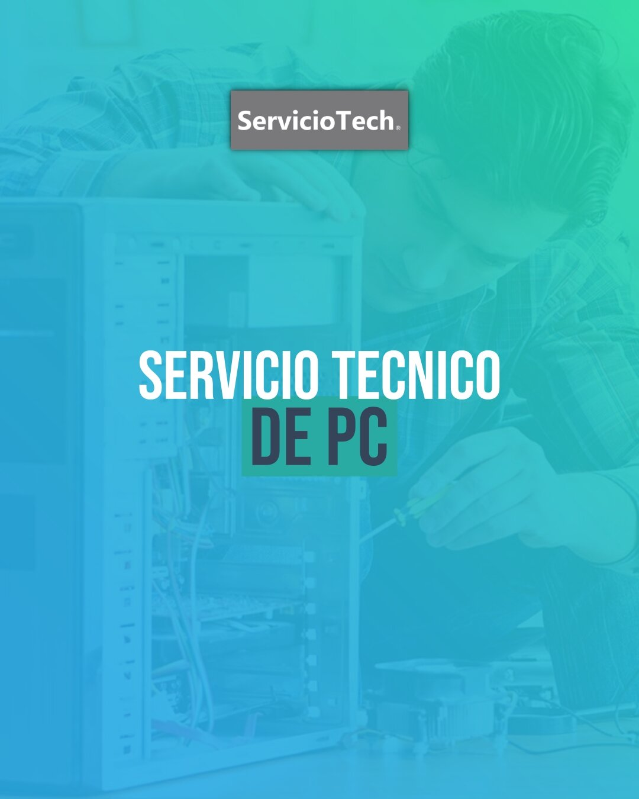
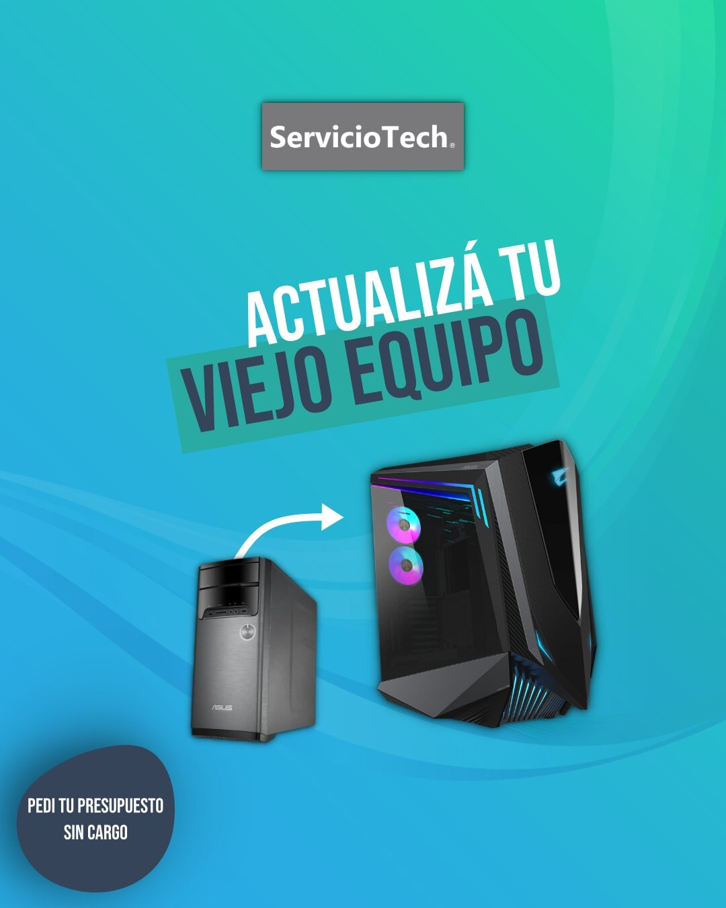
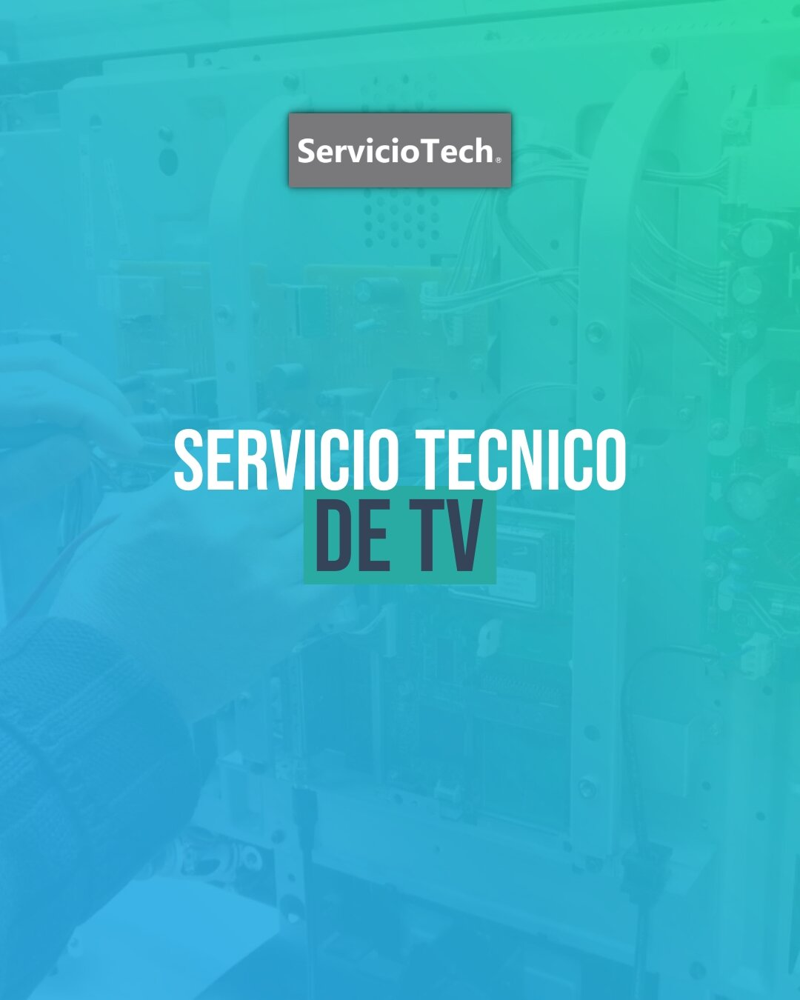
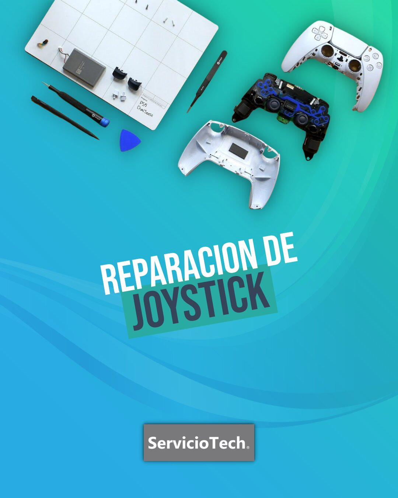

Computadoras y notebooks
Reparación, mantenimiento, optimización, instalación de programas y actualizacion de hardware.
Soluciones para computadoras, notebooks, celulares, consolas y televisores.
Diagnóstico técnico, presupuesto claro y acompañamiento durante todo el proceso.




Servicios
Trabajamos con equipos de uso diario, entretenimiento y trabajo. Te explicamos el problema de forma simple y buscamos la solución más conveniente.
Reparación, mantenimiento, optimización, instalación de programas y actualizacion de hardware.
Diagnóstico de fallas, problemas de carga, problemas de pantalla, configuración y consultas técnicas.
Mantenimiento, diagnóstico de fallas, problemas de temperatura y revisión general.
Revisión técnica, diagnóstico inicial, reparacion e informe tecnico para seguros.
Configuración, revisión de errores, conexión, mantenimiento y asistencia para uso diario.
Te ayudamos a elegir, mejorar o configurar tus equipos para que funcionen mejor y duren más.
Reseñas
Experiencias reales de personas que ya confiaron en ServicioTech.
Teléfono: +54-2346-610009
e-Mail: serviciotechchivilcoy@gmail.com